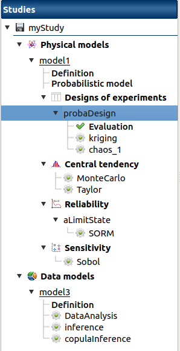

User manual - First steps¶
1- Getting started with the graphical interface¶
1-1 Main window¶

The main window of the graphical interface consists of a working space in which the other windows (model definition or result window) open, surrounded by:
The study tree displays the models and analyses performed in the studies. Elements are organized in sections, in bold (ex: Physical models, Evaluation, Definition), in which the user can create analyses and models.
The main menu bar and tool bar.

The Python console shown by default,

The Graph settings window appears when a figure is displayed in the main window to set up graphical parameters. Its content varies according to the type of graph:
- for the Cobweb plots and the Plot matrix, the window allows to:
- Select the variables to display and the axis order
- Modify the space where the values are plotted with the Ranks check button (default: physical space). Check off the button to display the rank of the values
- Export the figure

- for the charts, the window allows to:
- Export the figure
- Specify the graph title (expected: string)
- Specify axis title (expected: string) in the X-axis and Y-axis tabs
- Depending on the graph:
- Select data to plot
- Modify the space where the values are plotted with the Ranks check button (default: physical space). Check off the button to display the rank of the values
- Specify other axis parameters in the X-axis and Y-axis tabs:
- minimum/maximum bounds (expected: floating point)
- log scale (check button only available if axis values are positive)
- X-axis label orientation
- Reset the axis ranges
- Specify the plot style: color, marker size and style (cross, circle, diamond, square, plus)

1-2 On startup¶

- The interface startup window shows 3 items:
- New study: Create a new study.
- Open study: Choose an existing study from a dialog box. The loaded study becomes the current study.
- Import Python script: Load a Python Script from a dialog box. It is impossible to load a study when another one is already opened.
- Click on the icon
 to open the documentation
to open the documentation
1-3 Menus¶
File Menu¶

The File menu gathers the following shortcuts:
- New: Create a new study.
- Open…: Choose an existing study from a dialog box. The loaded study becomes the current study.
- Open Recent: Quick access to recently loaded studies.
- Save: Save the current study.
- Save As…: Choose the directory where to save the current project.
- Import Python…: Load a Python Script from a dialog box.
- Close: Close the current Study. A pop-up dialog window appears if the current Study has not been saved. Any Study may also be closed through its context menu.
- Exit: Quit the interface.
Help Menu¶

The Help menu gathers the following shortcuts:
- User’s manual: Open the user’s manual in a Web browser.
- About Persalys: Display information (version, license, libraries, etc.) about the interface in a pop-up dialog window.
2- Create a study¶
There are several ways to create a new study:
Use the button New Study of the startup window
Click on
 in the tool bar
in the tool barClick on New in the file menu
Press Ctrl+N
When a study is created, an item appears in the study tree. This item is associated with a window which provides ways to define models:
The context menu of study item gathers the same actions as the window:

- It proposes to create models:
- Models defined with a vector function:
- Symbolic model: Physical model defined with analytical formulas
- Python model: Physical model defined with a Python script
- YACS model: Physical model defined with a YACS scheme (optional)
- FMI model: Physical model defined with a FMU file (optional)
- Models defined with a field function:
- Symbolic Field model: Physical model defined with analytical formulas and a mesh
- Python Field model: Physical model defined with a Python script and a mesh
- Models defined with a data sample:
- Data model: Physical model defined with a sample
- The context menu also allows the following actions:
- Rename: Rename the study
- Export Python: Choose a directory to export the study as a Python script
- Save: Save the study
- Close: Close the study. A pop-up dialog window appears if the study has not been saved